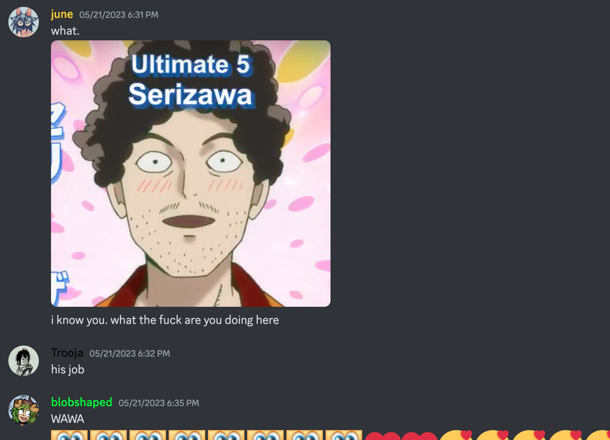
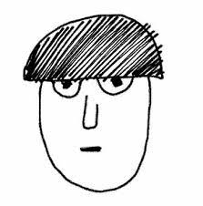

mob psyco 100
fucckkk
ok so this anime was recommended to me by a certain dog (woof woof) andd. not like i hadnt heard about it before through tumblr dash osmosis, but like, y'know. & basically what im trying to say is that its really really good
my thoughts are not going to be particularly organized here so i will simply DONT. stop it. dont scroll to the right theres NOTHING there. ok ?
...i will simply listify.
- lord the animation. firstly. LOVE how it constantly switches between different styles to show different moods. it's great
- reigen's stupid fucking "special moves" kill me everytime
- mob's little bean mouth
- mob in general. mob is great. mob is so cool
- all of these characters are literally so fucking good.
spoiler-ish(?) section
 sniff sniff sniff. hhhhhhhh. hrugh
sniff sniff sniff. hhhhhhhh. hrugh- the marathon episode......... explodes

- THE BROCCOLI!!!!!!!!!!!!! THE FUCKING BROCCOLI!!!!!!!!!!!!!!!! SHAKES YOU BACK AND FORTH
- the ibogami episode was really cute. reigen is so weird /pos
- THE WAY SERIZAWA STARTS USING THE BUSINESS CARDS REIGEN GAVE HIM AS HIS PSYCHIC WEAPON AFTER HE LOST HIS UMBRELLA!!! AIEEE!!
- all of dimple's avatars during the divine tree arc have really fat asses. raises many questions
- reigen
and basically. the theme s
10/10 watch now please :heart:
